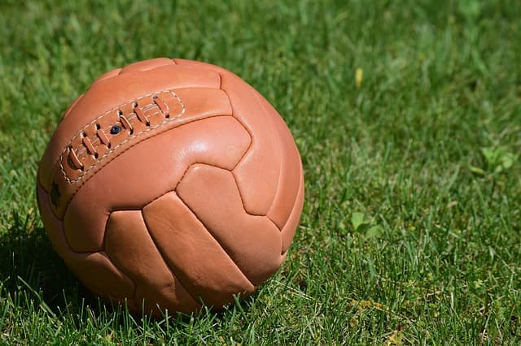
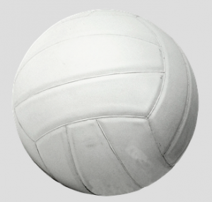
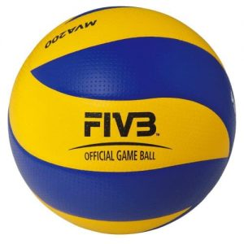

En 1900 el profesor W.G. Morgan encargó la construcción de la primera pelota de voley a la marca de balones AG Spalding & Bros, que fabricó una pelota que constaba de tres capas; una vejiga interna hecha de goma como las cámaras de las bicicletas; una capa intermedia que era como una especie de malla; y una capa externa de piel para dejar un tacto más agradable.
El primer reglamento de voleibol ya establecía las medidas oficiales que debía tener un balón de reglamento. En un principio el balón debía tener una circunferencia comprendida entre 25-27 pulgadas (63,5-68,6 cm) y un peso de 252-336 gr.

En 1964 se modifica el reglamento estableciendo unas nuevas medidas oficiales para una pelota de voley. Además de la nueva circunferencia marcada en 64-67 cm y el peso fijado en 270 gr, se establecía como novedad una nueva presión con la que debía estar inflado el balón de 0,45-0,52 Kg/cm². Esa presión sería modificada nuevamente en 1980 para reducirla un poco y adaptarla mejor a los jugadores.

En un principio los balones se construían mediante 18 paneles de cuero pegados o cosidos a máquina. El color tenía que ser claro y no se permitían colores vistosos. pelota de volley En los Juegos Olímpicos de Sydney aparecieron por primera vez los balones tricolor. La Federación Internacional introducía los balones de colores para que el juego fuera mucho más espectacular. El primer gran cambio que sufre la pelota de voleibol no es hasta 2008 en los JJOO de Beijing. Para estos JJOO la firma de balones Mikasa crea un nuevo balón de voleibol totalmente novedoso.
El diseño de ese nuevo balón supone un cambio drástico en la construcción de los balones de voleibol, que pasa de tener 18 paneles a estar construido con tan solo 8 paneles, permitiendo desarrollar un juego mucho más limpio y preciso. El balón de los JJOO de Beijing es el que se usa en la actualidad. Para los nuevos balones, el reglamento permite una combinación de colores y establece unas medidas y peso oficiales del balón de voleibol de 65-67 cm y 260-280 g a una presión de 0,300 y 0,325 kg/cm².
